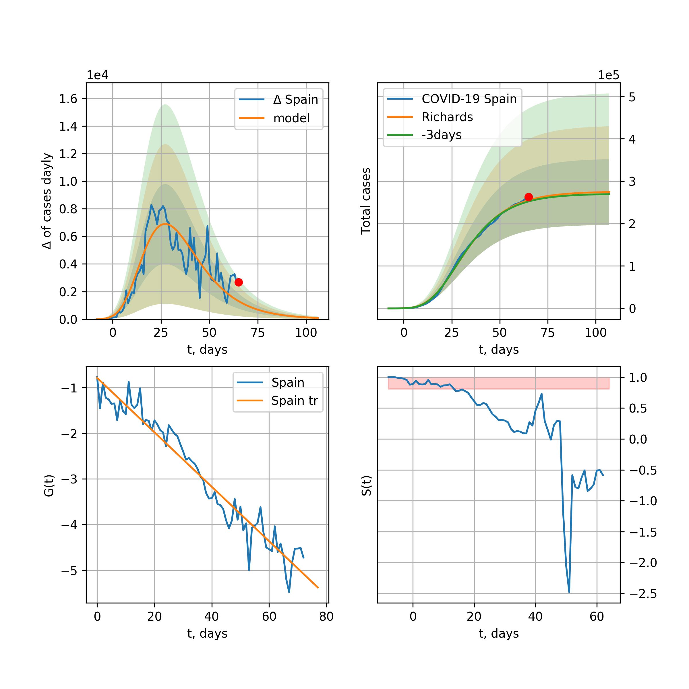
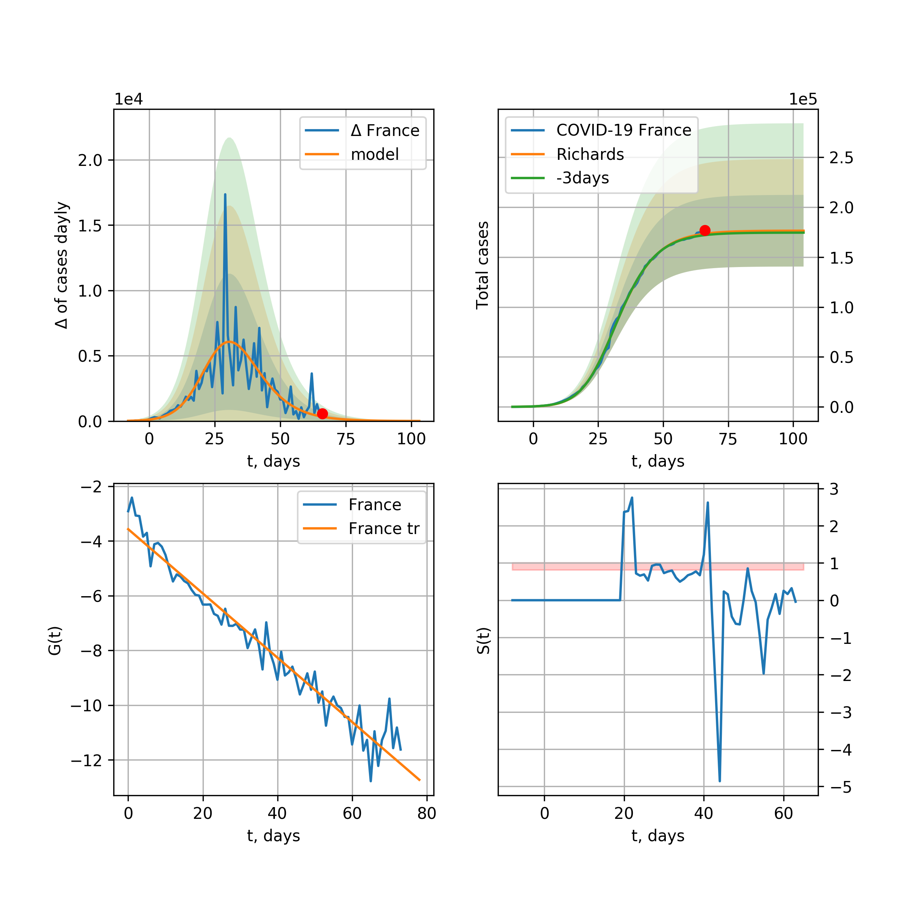
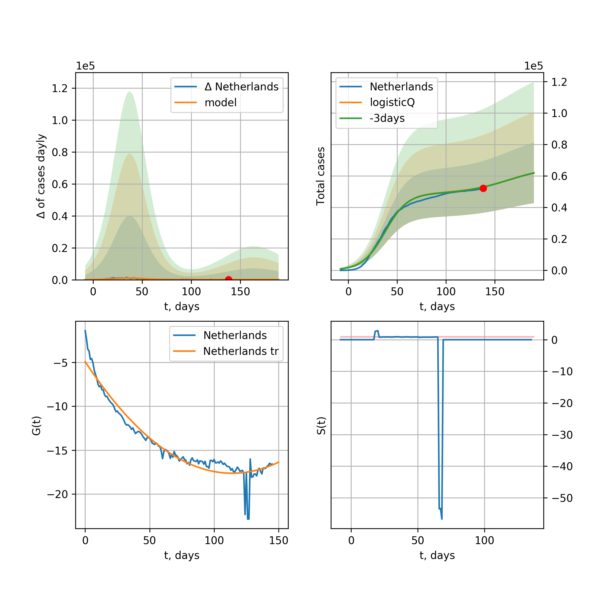
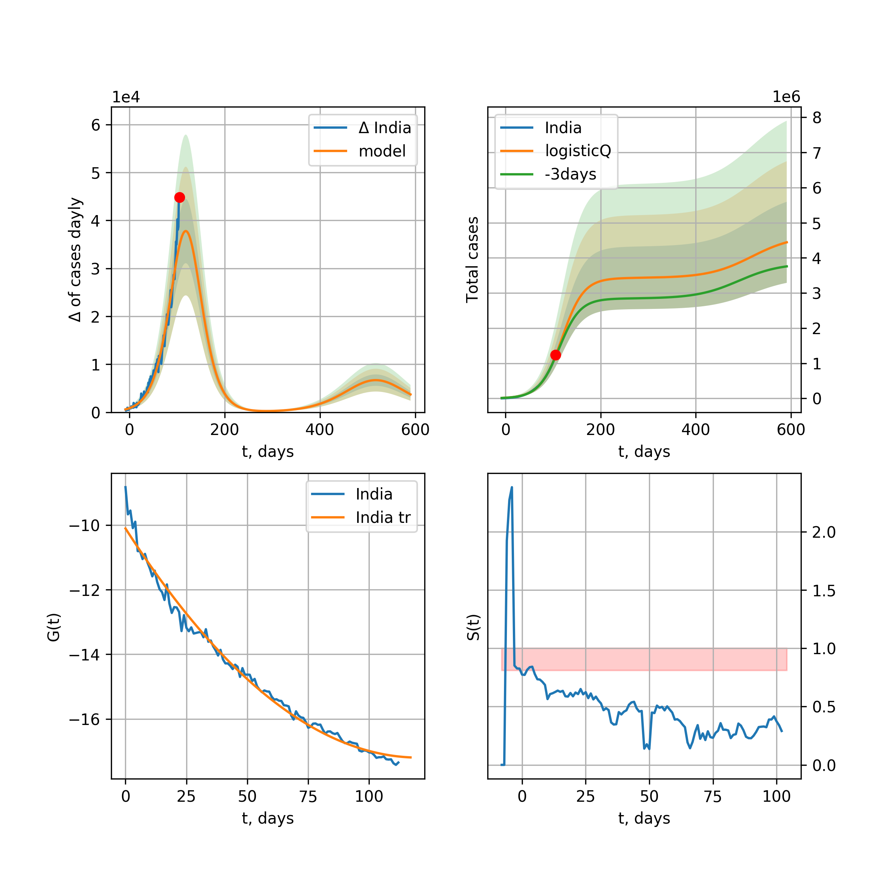
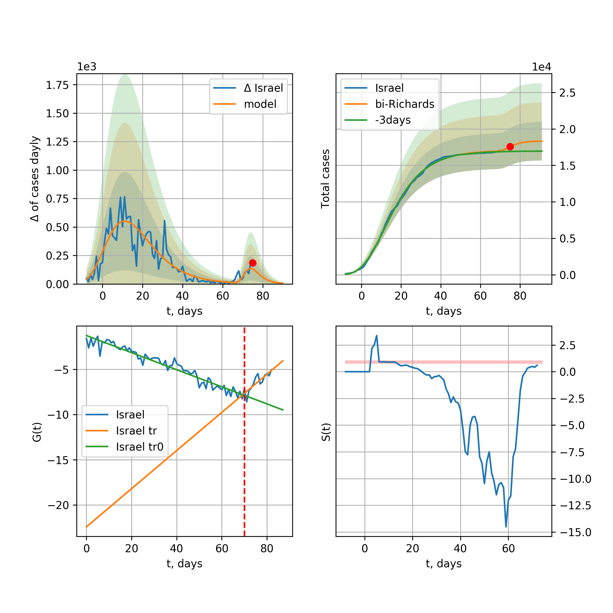
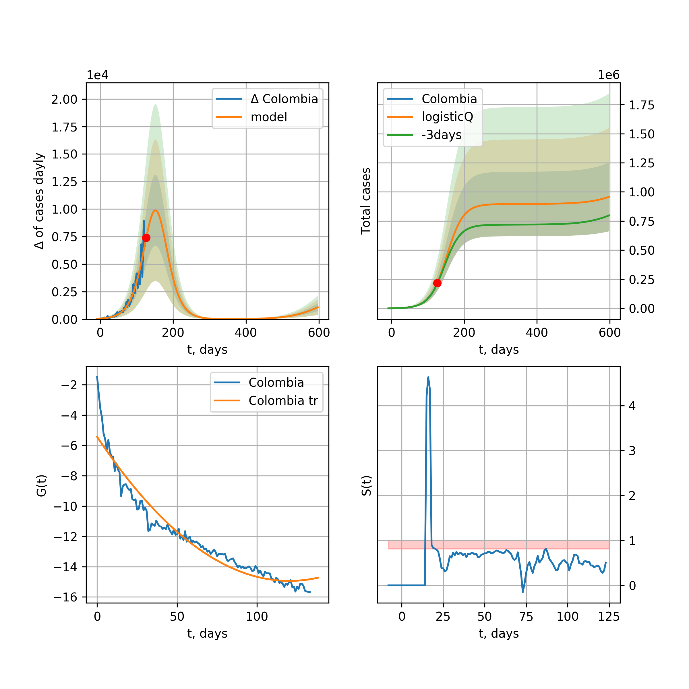
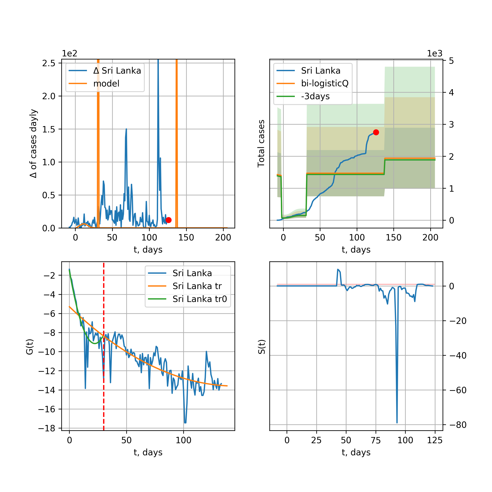

Multi-logistic model of COVID-19 dynamics
Model, code, results
Project maintained by algmaknick Hosted on GitHub Pages — Theme by mattgraham
World

World data at: 2020-05-07
+3 day model MAPE: 0.044396
model: bi-logisticQ
coeffs: [ 3.64135147e+06 1.42013609e-06 7.38361794e+01 -7.90348768e+04]
S.Korea scenario coeffs: [0.35416971, 0.02606324, 4.35859408, 19.30413219]
rational stdev: 0.144769
forecast at the end of period: +310 days
deltaDaycases: 708
total cases: 5327110 ± 771201
total death: 368118 ± 159876
tri-logisticQ approximation splitting points: 26,59
trend coefficient of determination: 0.957216
intercept_: -9.890425229004336
coeffs_: [ 0. -0.26614025 0.00124975]
trend1 coefficient of determination: 0.874764
intercept_: -22.035447570025077
coeffs_: [ 0. 0.31660897 -0.00341999]
trend coefficient of determination: 0.990677
intercept_: -1.1975489885025326
coeffs_: [ 0. -0.33447527 0.00157509]
European Union

European Union data at: 2020-05-07
+3 day model MAPE: 0.014337
model: logisticQ
coeffs: [ 1.04957975e+06 1.02455032e-06 4.87790952e+01 -1.19892662e+05]
S.Korea scenario coeffs: [0.35416971, 0.02606324, 4.35859408, 19.30413219]
rational stdev: 0.428251
forecast at the end of period: +205 days
deltaDaycases: 248
total cases: 1417369 ± 606989
total death: 149025 ± 191460
trend coefficient of determination: 0.987337
intercept_: -3.0007487596918097
coeffs_: [ 0. -0.32949189 0.00170454]
USA

USA data at: 2020-05-07
+3 day model MAPE: 0.015480
model: Richards
coeffs: [ 1.70460871e+06 3.39250742e+00 -3.96722685e+01 1.59783756e-02]
rational stdev: 0.254728
forecast at the end of period: +86 days
deltaDaycases: 266
total cases: 1699822 ± 432992
total death: 101161 ± 77305
trend coefficient of determination: 0.934551
intercept: -1.009191
slope: -0.047976
Spain

Spain data at: 2020-05-07
+3 day model MAPE: 0.010298
model: Richards
coeffs: [ 2.71984579e+05 7.20606107e+00 -3.89957565e+01 9.69433345e-03]
rational stdev: 0.469557
forecast at the end of period: +44 days
deltaDaycases: 75
total cases: 270942 ± 127222
total death: 27499 ± 38737
trend coefficient of determination: 0.940426
intercept: -0.752862
slope: -0.060628
Italy

Italy data at: 2020-05-07
+3 day model MAPE: 0.003864
model: Richards
coeffs: [ 2.32078786e+05 5.76088473e+00 -4.77981020e+01 1.07242429e-02]
rational stdev: 0.099426
forecast at the end of period: +44 days
deltaDaycases: 80
total cases: 230819 ± 22949
total death: 32034 ± 9555
trend coefficient of determination: 0.978902
intercept: -1.097033
slope: -0.056938
United Kingdom

United Kingdom data at: 2020-05-07
+3 day model MAPE: 0.019263
model: Richards
coeffs: [ 2.78526876e+05 3.89689447e+00 -4.77506318e+01 1.37709098e-02]
rational stdev: 0.282407
forecast at the end of period: +58 days
deltaDaycases: 219
total cases: 274519 ± 77526
total death: 40656 ± 34444
trend coefficient of determination: 0.908658
intercept: -1.374890
slope: -0.043844
France

France data at: 2020-05-07
+3 day model MAPE: 0.006547
model: Richards
coeffs: [1.75101292e+05 2.23776557e-01 2.58883812e+01 5.33622935e-01]
rational stdev: 0.218379
forecast at the end of period: +40 days
deltaDaycases: 3
total cases: 175072 ± 38232
total death: 26028 ± 17051
trend coefficient of determination: 0.954186
intercept: -3.795323
slope: -0.124344
Germany

Germany data at: 2020-05-07
+3 day model MAPE: 0.011110
model: logisticQ
coeffs: [ 1.63589133e+05 1.09534382e-06 3.02893202e+01 -1.30048372e+05]
S.Korea scenario coeffs: [0.35416971, 0.02606324, 4.35859408, 19.30413219]
rational stdev: 0.372297
forecast at the end of period: +128 days
deltaDaycases: 53
total cases: 220804 ± 82204
total death: 9633 ± 10759
trend coefficient of determination: 0.993295
intercept_: -4.64329382904754
coeffs_: [ 0. -0.33978881 0.00231008]
Turkey
Turkey data at: 2020-05-07
+3 day model MAPE: 0.006095
model: Richards
coeffs: [1.48491693e+05 5.69384539e-01 4.42532142e+00 1.55258719e-01]
rational stdev: 0.312817
forecast at the end of period: +98 days
deltaDaycases: 0
total cases: 148488 ± 46449
total death: 4043 ± 3794
trend coefficient of determination: 0.813435
intercept: -1.645932
slope: -0.081032
Russia

Russia data at: 2020-05-07
+3 day model MAPE: 0.098959
model: logisticQ
coeffs: [ 2.83743318e+05 5.64217164e-06 5.65312899e+01 -2.22877888e+04]
S.Korea scenario coeffs: [0.35416971, 0.02606324, 4.35859408, 19.30413219]
rational stdev: 0.395960
forecast at the end of period: +226 days
deltaDaycases: 455
total cases: 376664 ± 149144
total death: 3454 ± 4102
trend coefficient of determination: 0.955144
intercept_: -3.643523281768365
coeffs_: [ 0. -0.20688198 0.00048654]
Iran

Iran data at: 2020-05-07
+3 day model MAPE: 0.021791
model: bi-logisticQ
coeffs: [ 9.09107500e+04 8.01044697e-07 3.71022413e+01 -1.49055665e+05]
S.Korea scenario coeffs: [0.35, 0.5, 3, 1]
rational stdev: 0.319520
forecast at the end of period: +100 days
deltaDaycases: 55
total cases: 129172 ± 41273
total death: 8123 ± 7786
bi-logisticQ approximation splitting point: 17
trend coefficient of determination: 0.987745
intercept_: -2.720144864989817
coeffs_: [ 0. -0.61067547 0.00823538]
trend coefficient of determination: 0.979689
intercept_: -8.284372494689586
coeffs_: [ 0. -0.17134121 0.00089121]
Brazil

Brazil data at: 2020-05-07
+3 day model MAPE: 0.054470
model: logisticQ
coeffs: [ 3.49741972e+05 8.46948288e-06 6.34408108e+01 -1.06688302e+04]
S.Korea scenario coeffs: [0.35416971, 0.02606324, 4.35859408, 19.30413219]
rational stdev: 0.410442
forecast at the end of period: +275 days
deltaDaycases: 379
total cases: 464821 ± 190782
total death: 31462 ± 38740
trend coefficient of determination: 0.851200
intercept_: -3.925736450059622
coeffs_: [ 0. -0.31088634 0.00234274]
Canada

Canada data at: 2020-05-07
+3 day model MAPE: 0.011995
model: Richards
coeffs: [ 1.04869081e+05 2.87787147e+00 -6.41380015e+01 1.54096117e-02]
rational stdev: 0.186720
forecast at the end of period: +98 days
deltaDaycases: 30
total cases: 104204 ± 19456
total death: 7075 ± 3963
trend coefficient of determination: 0.926356
intercept: -1.523214
slope: -0.047676
Belgium

Belgium data at: 2020-05-07
+3 day model MAPE: 0.006770
model: logisticQ
coeffs: [ 5.22714013e+04 1.56665992e-06 3.19628811e+01 -7.93813404e+04]
S.Korea scenario coeffs: [0.35416971, 0.02606324, 4.35859408, 19.30413219]
rational stdev: 0.344383
forecast at the end of period: +128 days
deltaDaycases: 54
total cases: 69893 ± 24069
total death: 11438 ± 11817
trend coefficient of determination: 0.978506
intercept_: -4.262887833060351
coeffs_: [ 0. -0.32346732 0.00234701]
Peru

Peru data at: 2020-05-07
+3 day model MAPE: 0.047651
model: logisticQ
coeffs: [ 1.06816028e+05 6.08553467e-06 5.16450442e+01 -1.81614432e+04]
S.Korea scenario coeffs: [0.35416971, 0.02606324, 4.35859408, 19.30413219]
rational stdev: 0.360941
forecast at the end of period: +226 days
deltaDaycases: 97
total cases: 142852 ± 51561
total death: 3971 ± 4299
trend coefficient of determination: 0.967657
intercept_: -3.568335991881316
coeffs_: [ 0. -0.29808098 0.00218929]
Netherlands

Netherlands data at: 2020-05-07
+3 day model MAPE: 0.007286
model: logisticQ
coeffs: [ 4.23819472e+04 1.36489249e-06 3.33616057e+01 -8.64191860e+04]
S.Korea scenario coeffs: [0.35416971, 0.02606324, 4.35859408, 19.30413219]
rational stdev: 0.360335
forecast at the end of period: +128 days
deltaDaycases: 56
total cases: 56398 ± 20322
total death: 7139 ± 7717
trend coefficient of determination: 0.980238
intercept_: -3.2883386868158757
coeffs_: [ 0. -0.35393122 0.00266191]
India

India data at: 2020-05-07
+3 day model MAPE: 0.117163
model: logisticQ
coeffs: [ 1.05966521e+05 2.25953093e-04 2.83880123e+01 -4.22087884e+02]
S.Korea scenario coeffs: [0.35416971, 0.02606324, 4.35859408, 19.30413219]
rational stdev: 0.157189
forecast at the end of period: +156 days
deltaDaycases: 85
total cases: 141728 ± 22278
total death: 4748 ± 2238
trend coefficient of determination: 0.976648
intercept_: -9.29916258855684
coeffs_: [ 0. -0.22983359 0.00311917]
Switzerland

Switzerland data at: 2020-05-07
+3 day model MAPE: 0.006321
model: logisticQ
coeffs: [ 2.93358530e+04 9.84485379e-07 2.54490990e+01 -1.54563024e+05]
S.Korea scenario coeffs: [0.35416971, 0.02606324, 4.35859408, 19.30413219]
rational stdev: 0.357521
forecast at the end of period: +100 days
deltaDaycases: 13
total cases: 39550 ± 14140
total death: 2376 ± 2548
trend coefficient of determination: 0.985454
intercept_: -3.5245239288221306
coeffs_: [ 0. -0.34674097 0.00239627]
Ecuador

Ecuador data at: 2020-05-07
+3 day model MAPE: 0.155316
model: logisticQ
coeffs: [ 3.13676865e+04 8.84955156e-07 3.29891810e+01 -1.06534782e+05]
S.Korea scenario coeffs: [0.35416971, 0.02606324, 4.35859408, 19.30413219]
rational stdev: 0.355776
forecast at the end of period: +128 days
deltaDaycases: 73
total cases: 40646 ± 14461
total death: 2218 ± 2367
trend coefficient of determination: 0.689577
intercept_: -5.424323886254214
coeffs_: [ 0. -0.32999434 0.0030905 ]
Portugal

Portugal data at: 2020-05-07
+3 day model MAPE: 0.005656
model: Richards
coeffs: [ 2.85920492e+04 6.38215039e+00 -3.40553744e+01 1.16793120e-02]
rational stdev: 1.084301
forecast at the end of period: +58 days
deltaDaycases: 2
total cases: 28558 ± 30965
total death: 1181 ± 3841
trend coefficient of determination: 0.881689
intercept: -0.750233
slope: -0.063994
Saudi Arabia

Saudi Arabia data at: 2020-05-07
+3 day model MAPE: 0.057513
model: logisticQ
coeffs: [ 5.00347996e+04 1.50473894e-04 5.14011210e+01 -7.46619073e+02]
S.Korea scenario coeffs: [0.35416971, 0.02606324, 4.35859408, 19.30413219]
rational stdev: 0.361174
forecast at the end of period: +212 days
deltaDaycases: 68
total cases: 66517 ± 24024
total death: 431 ± 466
trend coefficient of determination: 0.809036
intercept_: -4.254594455632029
coeffs_: [ 0. -0.24060831 0.00162884]
Sweden

Sweden data at: 2020-05-07
+3 day model MAPE: 0.000670
model: Richards
coeffs: [ 3.93761252e+04 4.36269580e-01 -7.05087142e+00 9.80535926e-02]
rational stdev: 0.294352
forecast at the end of period: +100 days
deltaDaycases: 11
total cases: 39110 ± 11512
total death: 4828 ± 4263
trend coefficient of determination: 0.832145
intercept: -1.652780
slope: -0.048020
Pakistan

Pakistan data at: 2020-05-07
+3 day model MAPE: 0.033918
model: bi-logisticQ
coeffs: [ 4.51325915e+04 5.22299699e-06 6.10158487e+01 -1.71298715e+04]
S.Korea scenario coeffs: [0.35416971, 0.02606324, 4.35859408, 19.30413219]
rational stdev: 0.422516
forecast at the end of period: +86 days
deltaDaycases: 5
total cases: 45493 ± 19221
total death: 1045 ± 1324
bi-logisticQ approximation splitting point: 20
trend coefficient of determination: 0.391568
intercept_: -3.9808806978581046
coeffs_: [ 0. -0.04620278 -0.00453428]
trend coefficient of determination: 0.936260
intercept_: -3.856647542116999
coeffs_: [ 0. -0.24367244 0.00165147]
Ireland

Ireland data at: 2020-05-07
+3 day model MAPE: 0.006781
model: logisticQ
coeffs: [ 2.32807799e+04 1.38878730e-05 3.45069655e+01 -9.64067663e+03]
S.Korea scenario coeffs: [0.35416971, 0.02606324, 4.35859408, 19.30413219]
rational stdev: 0.337448
forecast at the end of period: +142 days
deltaDaycases: 20
total cases: 31226 ± 10537
total death: 1957 ± 1981
trend coefficient of determination: 0.980414
intercept_: -3.6241845611722594
coeffs_: [ 0. -0.293843 0.00196049]
Mexico

Mexico data at: 2020-05-07
+3 day model MAPE: 0.015948
model: logisticQ
coeffs: [ 5.50431872e+04 1.03931983e-05 4.08587466e+01 -9.91720380e+03]
S.Korea scenario coeffs: [0.35416971, 0.02606324, 4.35859408, 19.30413219]
rational stdev: 0.221743
forecast at the end of period: +212 days
deltaDaycases: 19
total cases: 74166 ± 16445
total death: 7415 ± 4932
trend coefficient of determination: 0.988769
intercept_: -6.5777562842749155
coeffs_: [ 0. -0.21965177 0.00180091]
Singapore

Singapore data at: 2020-05-07
+3 day model MAPE: 0.049678
model: bi-logisticQ
coeffs: [ 2.11782948e+04 1.23978696e-03 8.31787371e+01 -6.48127950e+01]
S.Korea scenario coeffs: [0.35, 0.5, 4.0, 1.0]
rational stdev: 0.344350
forecast at the end of period: +100 days
deltaDaycases: 0
total cases: 21277 ± 7326
total death: 20 ± 20
bi-logisticQ approximation splitting point: 35
trend coefficient of determination: 0.914568
intercept_: -2.036640634366525
coeffs_: [ 0. -0.39517788 0.00592335]
trend coefficient of determination: 0.903790
intercept_: -9.871739828610254
coeffs_: [ 0. 0.09036183 -0.00122548]
Chile

Chile data at: 2020-05-07
+3 day model MAPE: 0.137095
model: logisticQ
coeffs: [ 4.74544958e+04 1.86256382e-06 5.76959465e+01 -3.93971558e+04]
S.Korea scenario coeffs: [0.35416971, 0.02606324, 4.35859408, 19.30413219]
rational stdev: 0.430590
forecast at the end of period: +296 days
deltaDaycases: 14
total cases: 63875 ± 27504
total death: 740 ± 955
trend coefficient of determination: 0.761198
intercept_: -4.242898698106094
coeffs_: [ 0. -0.28181187 0.00230789]
Israel

Israel data at: 2020-05-07
+3 day model MAPE: 0.002245
model: Richards
coeffs: [ 1.72979268e+04 7.75198894e+00 -4.06308030e+01 1.10766691e-02]
rational stdev: 0.133824
forecast at the end of period: +44 days
deltaDaycases: 1
total cases: 17278 ± 2312
total death: 253 ± 101
trend coefficient of determination: 0.869239
intercept: -1.154543
slope: -0.084304
Austria

Austria data at: 2020-05-07
+3 day model MAPE: 0.006398
model: logisticQ
coeffs: [ 1.51298520e+04 1.27901410e-06 2.32690219e+01 -1.57136706e+05]
S.Korea scenario coeffs: [0.35416971, 0.02606324, 4.35859408, 19.30413219]
rational stdev: 0.320135
forecast at the end of period: +86 days
deltaDaycases: 4
total cases: 20445 ± 6545
total death: 790 ± 758
trend coefficient of determination: 0.980648
intercept_: -2.770171750239678
coeffs_: [ 0. -0.35563049 0.00243326]
Belarus

Belarus data at: 2020-05-07
+3 day model MAPE: 0.026259
model: logisticQ
coeffs: [ 2.69735080e+04 6.14235327e-06 2.13064912e+01 -2.17785309e+04]
S.Korea scenario coeffs: [0.35416971, 0.02606324, 4.35859408, 19.30413219]
rational stdev: 0.233741
forecast at the end of period: +100 days
deltaDaycases: 49
total cases: 35755 ± 8357
total death: 205 ± 143
trend coefficient of determination: 0.978757
intercept_: -7.023478314067885
coeffs_: [ 0. -0.27263722 0.00302915]
Japan

Japan data at: 2020-05-07
+3 day model MAPE: 0.020942
model: Richards
coeffs: [1.55052781e+04 9.91644176e-02 7.95471964e+01 1.74536056e+00]
rational stdev: 0.537416
forecast at the end of period: +65 days
deltaDaycases: 0
total cases: 15505 ± 8332
total death: 578 ± 931
trend coefficient of determination: 0.815262
intercept: -7.443033
slope: -0.136262
Qatar

Qatar data at: 2020-05-07
+3 day model MAPE: 0.036878
model: bi-logisticQ
coeffs: [ 1.51465942e+04 1.53738513e-05 4.70404891e+01 -1.00835524e+04]
S.Korea scenario coeffs: [0.35416971, 0.02606324, 4.35859408, 19.30413219]
rational stdev: 0.355261
forecast at the end of period: +226 days
deltaDaycases: 1
total cases: 32212 ± 11443
total death: 20 ± 21
bi-logisticQ approximation splitting point: 31
trend coefficient of determination: 0.919409
intercept_: -1.6852707465713292
coeffs_: [ 0. -0.86529683 0.02183056]
trend coefficient of determination: 0.955405
intercept_: -8.206519853366489
coeffs_: [ 0. -0.03722629 -0.00066323]
Poland

Poland data at: 2020-05-07
+3 day model MAPE: 0.014589
model: Richards
coeffs: [ 1.98812962e+04 3.32697177e+00 -4.45291737e+01 1.59857203e-02]
rational stdev: 0.194884
forecast at the end of period: +72 days
deltaDaycases: 6
total cases: 19752 ± 3849
total death: 991 ± 579
trend coefficient of determination: 0.743594
intercept: -1.202571
slope: -0.046847
UAE

UAE data at: 2020-05-07
+3 day model MAPE: 0.035309
model: logisticQ
coeffs: [ 2.01185641e+04 3.04095930e-06 2.21329727e+01 -3.64329585e+04]
S.Korea scenario coeffs: [0.35416971, 0.02606324, 4.35859408, 19.30413219]
rational stdev: 0.176040
forecast at the end of period: +86 days
deltaDaycases: 67
total cases: 25731 ± 4529
total death: 261 ± 137
trend coefficient of determination: 0.978972
intercept_: -7.787974260366928
coeffs_: [ 0. -0.21122834 0.00202106]
Romania

Romania data at: 2020-05-07
+3 day model MAPE: 0.038708
model: logisticQ
coeffs: [ 1.51295896e+04 1.30881502e-06 3.39586924e+01 -8.36825293e+04]
S.Korea scenario coeffs: [0.35416971, 0.02606324, 4.35859408, 19.30413219]
rational stdev: 0.349693
forecast at the end of period: +156 days
deltaDaycases: 8
total cases: 20326 ± 7108
total death: 1244 ± 1305
trend coefficient of determination: 0.985969
intercept_: -3.807039988149331
coeffs_: [ 0. -0.3037164 0.00245002]
Ukraine

Ukraine data at: 2020-05-06
+3 day model MAPE: 0.009993
model: logisticQ
coeffs: [ 1.73552644e+04 6.28040758e-06 3.37255721e+01 -1.95747662e+04]
S.Korea scenario coeffs: [0.35416971, 0.02606324, 4.35859408, 19.30413219]
rational stdev: 0.330016
forecast at the end of period: +143 days
deltaDaycases: 27
total cases: 23025 ± 7598
total death: 571 ± 565
trend coefficient of determination: 0.943560
intercept_: -3.790930482646381
coeffs_: [ 0. -0.33620437 0.00325826]
Indonesia

Indonesia data at: 2020-05-07
+3 day model MAPE: 0.036538
model: logisticQ
coeffs: [ 1.55578986e+04 8.15771307e-06 2.37913665e+01 -1.17669884e+04]
S.Korea scenario coeffs: [0.35416971, 0.02606324, 4.35859408, 19.30413219]
rational stdev: 0.066444
forecast at the end of period: +114 days
deltaDaycases: 21
total cases: 20581 ± 1367
total death: 1498 ± 298
trend coefficient of determination: 0.975045
intercept_: -8.510006623538354
coeffs_: [ 0. -0.15027199 0.00111796]
Bangladesh

Bangladesh data at: 2020-05-07
+3 day model MAPE: 0.121997
model: bi-logisticQ
coeffs: [ 1.52576917e+04 4.82282721e-06 4.47207282e+01 -3.35831063e+04]
S.Korea scenario coeffs: [0.35416971, 0.02606324, 4.35859408, 19.30413219]
rational stdev: 0.301595
forecast at the end of period: +44 days
deltaDaycases: 0
total cases: 15307 ± 4616
total death: 245 ± 221
bi-logisticQ approximation splitting point: 25
trend coefficient of determination: 0.232653
intercept_: -6.325425729788838
coeffs_: [ 0. 0.22449345 -0.0150245 ]
trend coefficient of determination: 0.980575
intercept_: 3.92534182185733
coeffs_: [ 0. -0.4635868 0.00319602]
South_Korea

South Korea data at: 2020-05-07
+3 day model MAPE: 0.001134
model: bi-logisticQ
coeffs: [ 2.83865305e+03 1.52828601e-06 3.12359390e+01 -1.15387078e+05]
rational stdev: 0.132202
forecast at the end of period: +16 days
deltaDaycases: 0
total cases: 10738 ± 1419
total death: 254 ± 100
bi-logisticQ approximation splitting point: 25
trend coefficient of determination: 0.936575
intercept_: -5.550309986859278
coeffs_: [ 0. -0.32029791 -0.00074495]
trend coefficient of determination: 0.797736
intercept_: -11.376172896165372
coeffs_: [ 0. -0.06059628 -0.00016653]
Denmark

Denmark data at: 2020-05-07
+3 day model MAPE: 0.029119
model: bi-logisticQ
coeffs: [ 8.88910813e+03 8.39295475e-07 3.44853653e+01 -1.52721511e+05]
S.Korea scenario coeffs: [0.35416971, 0.02606324, 4.35859408, 19.30413219]
rational stdev: 0.318924
forecast at the end of period: +142 days
deltaDaycases: 6
total cases: 12804 ± 4083
total death: 652 ± 623
bi-logisticQ approximation splitting point: 18
trend coefficient of determination: 0.963211
intercept_: -1.9308894789691964
coeffs_: [ 0. -0.26605777 -0.01390014]
trend coefficient of determination: 0.958429
intercept_: -6.950628543003394
coeffs_: [ 0. -0.13888091 0.00058289]
Serbia

Serbia data at: 2020-05-07
+3 day model MAPE: 0.011385
model: logisticQ
coeffs: [ 1.01995550e+04 2.87959517e-06 2.88636257e+01 -4.92123803e+04]
S.Korea scenario coeffs: [0.35416971, 0.02606324, 4.35859408, 19.30413219]
rational stdev: 0.278887
forecast at the end of period: +142 days
deltaDaycases: 2
total cases: 13780 ± 3843
total death: 288 ± 240
trend coefficient of determination: 0.968271
intercept_: -4.009129370370541
coeffs_: [ 0. -0.26854321 0.00174754]
Philippines

Philippines data at: 2020-05-07
+3 day model MAPE: 0.062266
model: logisticQ
coeffs: [ 1.03083115e+04 1.06758724e-06 2.63691942e+01 -1.00262701e+05]
S.Korea scenario coeffs: [0.35416971, 0.02606324, 4.35859408, 19.30413219]
rational stdev: 0.366590
forecast at the end of period: +100 days
deltaDaycases: 23
total cases: 13456 ± 4933
total death: 891 ± 979
trend coefficient of determination: 0.947637
intercept_: -4.429375627331765
coeffs_: [ 0. -0.34099298 0.00350037]
Norway

Norway data at: 2020-05-07
+3 day model MAPE: 0.005932
model: Richards
coeffs: [ 8.14064491e+03 6.99650964e-01 -5.49180573e+00 1.18833235e-01]
rational stdev: 0.231449
forecast at the end of period: +44 days
deltaDaycases: 0
total cases: 8134 ± 1882
total death: 219 ± 152
trend coefficient of determination: 0.928952
intercept: -1.332008
slope: -0.080795
Czechia

Czechia data at: 2020-05-07
+3 day model MAPE: 0.013289
model: logisticQ
coeffs: [ 7.69973796e+03 1.03066408e-06 2.46588032e+01 -1.39639657e+05]
S.Korea scenario coeffs: [0.35416971, 0.02606324, 4.35859408, 19.30413219]
rational stdev: 0.342252
forecast at the end of period: +100 days
deltaDaycases: 4
total cases: 10362 ± 3546
total death: 348 ± 357
trend coefficient of determination: 0.911601
intercept_: -3.8940216410839392
coeffs_: [ 0. -0.29150703 0.00207364]
Colombia

Colombia data at: 2020-05-07
+3 day model MAPE: 0.091386
model: logisticQ
coeffs: [ 1.65923062e+04 2.59049640e-06 4.76558541e+01 -3.05394093e+04]
S.Korea scenario coeffs: [0.35416971, 0.02606324, 4.35859408, 19.30413219]
rational stdev: 0.350956
forecast at the end of period: +268 days
deltaDaycases: 2
total cases: 22396 ± 7860
total death: 963 ± 1013
trend coefficient of determination: 0.960959
intercept_: -3.408415260364258
coeffs_: [ 0. -0.35208295 0.00366243]
Australia

Australia data at: 2020-05-07
+3 day model MAPE: 0.004266
model: logisticQ
coeffs: [ 6.68143884e+03 2.50013138e-06 1.81733604e+01 -9.07839269e+04]
S.Korea scenario coeffs: [0.35416971, 0.02606324, 4.35859408, 19.30413219]
rational stdev: 0.165547
forecast at the end of period: +44 days
deltaDaycases: 16
total cases: 8901 ± 1473
total death: 124 ± 61
trend coefficient of determination: 0.969307
intercept_: -4.585168704908093
coeffs_: [ 0. -0.28790366 0.00187639]
Malaysia

Malaysia data at: 2020-05-07
+3 day model MAPE: 0.016168
model: logisticQ
coeffs: [ 6.22819860e+03 1.26285559e-06 2.80396970e+01 -1.00759747e+05]
S.Korea scenario coeffs: [0.35416971, 0.02606324, 4.35859408, 19.30413219]
rational stdev: 0.332687
forecast at the end of period: +100 days
deltaDaycases: 9
total cases: 8273 ± 2752
total death: 136 ± 135
trend coefficient of determination: 0.848735
intercept_: -4.386465772733931
coeffs_: [ 0. -0.25259473 0.00172051]
Egypt

Egypt data at: 2020-05-07
+3 day model MAPE: 0.067747
model: logisticQ
coeffs: [ 1.41117927e+04 1.18760114e-05 3.96911610e+01 -6.87056851e+03]
S.Korea scenario coeffs: [0.35416971, 0.02606324, 4.35859408, 19.30413219]
rational stdev: 0.144538
forecast at the end of period: +198 days
deltaDaycases: 11
total cases: 18811 ± 2718
total death: 1136 ± 492
trend coefficient of determination: 0.939258
intercept_: -7.529542396044237
coeffs_: [ 0. -0.13668869 0.00091611]
Finland

Finland data at: 2020-05-07
+3 day model MAPE: 0.006176
model: Richards
coeffs: [ 7.47756970e+03 2.72656979e+00 -5.76227269e+01 1.73720967e-02]
rational stdev: 0.174448
forecast at the end of period: +86 days
deltaDaycases: 1
total cases: 7440 ± 1298
total death: 334 ± 174
trend coefficient of determination: 0.814362
intercept: -1.543696
slope: -0.048407
Morocco

Morocco data at: 2020-05-07
+3 day model MAPE: 0.037990
model: logisticQ
coeffs: [ 6.10347403e+03 3.67384470e-06 2.83021400e+01 -3.13893145e+04]
S.Korea scenario coeffs: [0.35416971, 0.02606324, 4.35859408, 19.30413219]
rational stdev: 0.251667
forecast at the end of period: +128 days
deltaDaycases: 6
total cases: 8150 ± 2051
total death: 268 ± 202
trend coefficient of determination: 0.968402
intercept_: -4.900205221173001
coeffs_: [ 0. -0.25713708 0.00227048]
Argentina

Argentina data at: 2020-05-07
+3 day model MAPE: 0.037912
model: logisticQ
coeffs: [ 6.25443047e+03 1.55273305e-06 2.86824741e+01 -5.65758320e+04]
S.Korea scenario coeffs: [0.35416971, 0.02606324, 4.35859408, 19.30413219]
rational stdev: 0.274244
forecast at the end of period: +142 days
deltaDaycases: 5
total cases: 8340 ± 2287
total death: 437 ± 359
trend coefficient of determination: 0.374952
intercept_: -6.864018493445569
coeffs_: [ 0. -0.22853325 0.00261999]
Algeria

Algeria data at: 2020-05-07
+3 day model MAPE: 0.066930
model: logisticQ
coeffs: [ 6.62773351e+03 1.45749940e-06 3.12227634e+01 -5.70735025e+04]
S.Korea scenario coeffs: [0.35416971, 0.02606324, 4.35859408, 19.30413219]
rational stdev: 0.271261
forecast at the end of period: +156 days
deltaDaycases: 6
total cases: 8823 ± 2393
total death: 822 ± 668
trend coefficient of determination: 0.935636
intercept_: -6.245291215614078
coeffs_: [ 0. -0.21945863 0.00218855]
Luxembourg
Luxembourg data at: 2020-05-07
+3 day model MAPE: 0.007549
model: logisticQ
coeffs: [ 3.71530917e+03 1.08665493e-06 9.41192835e+00 -1.62672349e+05]
rational stdev: 0.259446
forecast at the end of period: +254 days
deltaDaycases: 0
total cases: 3715 ± 963
total death: 96 ± 74
trend coefficient of determination: 0.945620
intercept_: -4.986508823831279
coeffs_: [ 0. -0.36325066 0.00366398]
Thailand

Thailand data at: 2020-05-07
+3 day model MAPE: 0.003434
model: Richards
coeffs: [ 2.97305610e+03 1.42860927e+01 -3.61764499e+01 8.81392679e-03]
rational stdev: 0.094113
forecast at the end of period: +16 days
deltaDaycases: 0
total cases: 2970 ± 279
total death: 54 ± 15
trend coefficient of determination: 0.865825
intercept: -1.211764
slope: -0.119883
Hungary

Hungary data at: 2020-05-06
+3 day model MAPE: 0.004512
model: logisticQ
coeffs: [ 3.49740095e+03 2.98794374e-06 3.38740510e+01 -3.77159113e+04]
S.Korea scenario coeffs: [0.35416971, 0.02606324, 4.35859408, 19.30413219]
rational stdev: 0.301231
forecast at the end of period: +157 days
deltaDaycases: 1
total cases: 4701 ± 1416
total death: 563 ± 508
trend coefficient of determination: 0.976300
intercept_: -3.349457383191332
coeffs_: [ 0. -0.24760078 0.00169468]
Greece

Greece data at: 2020-05-07
+3 day model MAPE: 0.008624
model: logisticQ
coeffs: [ 2.61219721e+03 1.19256771e-06 2.33208149e+01 -1.05473256e+05]
S.Korea scenario coeffs: [0.35416971, 0.02606324, 4.35859408, 19.30413219]
rational stdev: 0.277262
forecast at the end of period: +100 days
deltaDaycases: 1
total cases: 3514 ± 974
total death: 194 ± 161
trend coefficient of determination: 0.938836
intercept_: -3.3059964398465738
coeffs_: [ 0. -0.30457808 0.00235424]
Iraq

Iraq data at: 2020-05-07
+3 day model MAPE: 0.025419
model: bi-logisticQ
coeffs: [-8.17211055e+02 7.53007767e-03 2.32131083e+01 -4.55016047e+01]
rational stdev: 0.067428
forecast at the end of period: +128 days
deltaDaycases: 0
total cases: 2303 ± 155
total death: 92 ± 18
bi-logisticQ approximation splitting point: 32
trend coefficient of determination: 0.943011
intercept_: -6.485709272215987
coeffs_: [ 0. -0.09183938 -0.00203399]
trend coefficient of determination: 0.223611
intercept_: -17.089741442554264
coeffs_: [ 0. 0.27728841 -0.00321784]
Croatia

Croatia data at: 2020-05-07
+3 day model MAPE: 0.005974
model: logisticQ
coeffs: [ 2.09581429e+03 1.25544584e-06 2.64181648e+01 -1.16924575e+05]
S.Korea scenario coeffs: [0.35416971, 0.02606324, 4.35859408, 19.30413219]
rational stdev: 0.327466
forecast at the end of period: +114 days
deltaDaycases: 0
total cases: 2828 ± 926
total death: 114 ± 111
trend coefficient of determination: 0.982143
intercept_: -2.314827660174985
coeffs_: [ 0. -0.26919152 0.00151829]
Iceland

Iceland data at: 2020-05-07
+3 day model MAPE: 0.000018
model: logisticQ
coeffs: [ 1.80192835e+03 9.87296313e-06 1.33191534e+01 -1.79467271e+04]
rational stdev: 0.066542
forecast at the end of period: +44 days
deltaDaycases: 0
total cases: 1801 ± 119
total death: 10 ± 1
trend coefficient of determination: 0.935409
intercept_: -5.8119306604427585
coeffs_: [ 0. -0.16635109 -0.00024052]
Estonia

Estonia data at: 2020-05-07
+3 day model MAPE: 0.003648
model: logisticQ
coeffs: [ 1.71684931e+03 2.06749712e-06 1.28791192e+01 -6.07088420e+04]
S.Korea scenario coeffs: [0.0875, 0.5, 4.0, 1]
rational stdev: 0.135088
forecast at the end of period: +30 days
deltaDaycases: 1
total cases: 1842 ± 248
total death: 59 ± 23
trend coefficient of determination: 0.894292
intercept_: -6.485931130943408
coeffs_: [ 0. -0.18298245 0.00101085]
Bulgaria

Bulgaria data at: 2020-05-07
+3 day model MAPE: 0.000225
model: logisticQ
coeffs: [ 2.66336516e+03 3.57534100e-06 3.45616448e+01 -2.03394443e+04]
S.Korea scenario coeffs: [0.35416971, 0.02606324, 4.35859408, 19.30413219]
rational stdev: 0.175991
forecast at the end of period: +205 days
deltaDaycases: 0
total cases: 3582 ± 630
total death: 164 ± 86
trend coefficient of determination: 0.900157
intercept_: -5.920590937157873
coeffs_: [ 0. -0.19940063 0.00198832]
New Zealand

New Zealand data at: 2020-05-07
+3 day model MAPE: 0.002575
model: logisticQ
coeffs: [ 1.46583157e+03 3.67423134e-06 2.48655600e+01 -6.78171528e+04]
S.Korea scenario coeffs: [0.35416971, 0.02606324, 4.35859408, 19.30413219]
rational stdev: 0.376718
forecast at the end of period: +72 days
deltaDaycases: 2
total cases: 1962 ± 739
total death: 27 ± 30
trend coefficient of determination: 0.863980
intercept_: -4.068644770918103
coeffs_: [ 0. -0.12516512 -0.00071797]
Slovenia

Slovenia data at: 2020-05-07
+3 day model MAPE: 0.006156
model: bi-logisticQ
coeffs: [ 1.19763529e+03 9.68409020e-07 1.90442137e+01 -1.61311180e+05]
S.Korea scenario coeffs: [0.35416971, 0.02606324, 4.35859408, 19.30413219]
rational stdev: 0.225152
forecast at the end of period: +86 days
deltaDaycases: 0
total cases: 1835 ± 413
total death: 125 ± 84
bi-logisticQ approximation splitting point: 10
trend coefficient of determination: 0.968209
intercept_: -2.53431844604435
coeffs_: [ 0. -0.45029183 -0.00732028]
trend coefficient of determination: 0.905943
intercept_: -6.8658715129687655
coeffs_: [ 0. -0.10679795 -0.00014425]
Slovakia

Slovakia data at: 2020-05-07
+3 day model MAPE: 0.010992
model: logisticQ
coeffs: [ 1.49037042e+03 5.37508140e-04 2.38436781e+01 -2.26044746e+02]
S.Korea scenario coeffs: [0.35416971, 0.02606324, 4.35859408, 19.30413219]
rational stdev: 0.277974
forecast at the end of period: +128 days
deltaDaycases: 0
total cases: 2013 ± 559
total death: 36 ± 30
trend coefficient of determination: 0.908664
intercept_: -3.285410339850845
coeffs_: [ 0. -0.28213223 0.00203737]
Lithuania

Lithuania data at: 2020-05-06
+3 day model MAPE: 0.009910
model: logisticQ
coeffs: [ 1.41105165e+03 8.55563558e-07 1.86311153e+01 -1.60702141e+05]
S.Korea scenario coeffs: [0.35416971, 0.02606324, 4.35859408, 19.30413219]
rational stdev: 0.355008
forecast at the end of period: +73 days
deltaDaycases: 1
total cases: 1884 ± 669
total death: 63 ± 67
trend coefficient of determination: 0.967481
intercept_: -1.6041080082753885
coeffs_: [ 0. -0.40504587 0.0038533 ]
Latvia

Latvia data at: 2020-05-06
+3 day model MAPE: 0.021851
model: logisticQ
coeffs: [ 8.58908908e+02 6.53665324e-07 1.84810599e+01 -1.94821443e+05]
S.Korea scenario coeffs: [0.35416971, 0.02606324, 4.35859408, 19.30413219]
rational stdev: 0.299739
forecast at the end of period: +87 days
deltaDaycases: 0
total cases: 1156 ± 346
total death: 21 ± 18
trend coefficient of determination: 0.751168
intercept_: -3.567769707227737
coeffs_: [ 0. -0.283954 0.0025656]
Cyprus

Cyprus data at: 2020-05-07
+3 day model MAPE: 0.007372
model: logisticQ
coeffs: [ 8.67806453e+02 2.57751298e-06 1.60414260e+01 -5.89593547e+04]
S.Korea scenario coeffs: [0.35416971, 0.02606324, 4.35859408, 19.30413219]
rational stdev: 0.180155
forecast at the end of period: +86 days
deltaDaycases: 0
total cases: 1172 ± 211
total death: 19 ± 10
trend coefficient of determination: 0.838284
intercept_: -4.355946197813437
coeffs_: [ 0. -0.24336723 0.00188098]
Malta

Malta data at: 2020-05-07
+3 day model MAPE: 0.011662
model: Richards
coeffs: [4.78767842e+02 1.14165356e-01 2.17299800e+01 1.33098468e+00]
rational stdev: 0.241011
forecast at the end of period: +16 days
deltaDaycases: 0
total cases: 478 ± 115
total death: 4 ± 2
trend coefficient of determination: 0.865991
intercept: -5.389537
slope: -0.167988
Sri Lanka

Sri Lanka data at: 2020-05-07
+3 day model MAPE: 0.062838
model: bi-logisticQ
coeffs: [ 5.18033887e+02 4.95277952e-03 3.80543331e+01 -3.87676409e+01]
S.Korea scenario coeffs: [0.35416971, 0.02606324, 4.35859408, 19.30413219]
rational stdev: 0.261390
forecast at the end of period: +212 days
deltaDaycases: 0
total cases: 917 ± 239
total death: 10 ± 7
bi-logisticQ approximation splitting point: 35
trend coefficient of determination: 0.700900
intercept_: -1.7291427146735243
coeffs_: [ 0. -0.62059696 0.01251448]
trend coefficient of determination: 0.356970
intercept_: -45.35102800084556
coeffs_: [ 0. 1.68688112 -0.01943157]
References
- Worldometers COVID-19 Coronavirus Pandemic
- Su COVID-19 susijusi gyventojų ir verslo statistika
- Bi-logistic growth
- Least squares
- scikit-learn
- scipy.org
- European Centre for Disease Prevention and Control An agency of the European Union
- Aaron Miller, Mac Josh Reandelar, Kimberly Fasciglione, Violeta Roumenova, Yan Li, Gonzalo H Otazu, Correlation between universal BCG vaccination policy and reduced morbidity and mortality for COVID-19: an epidemiological study, https://doi.org/10.1101/2020.03.24.20042937